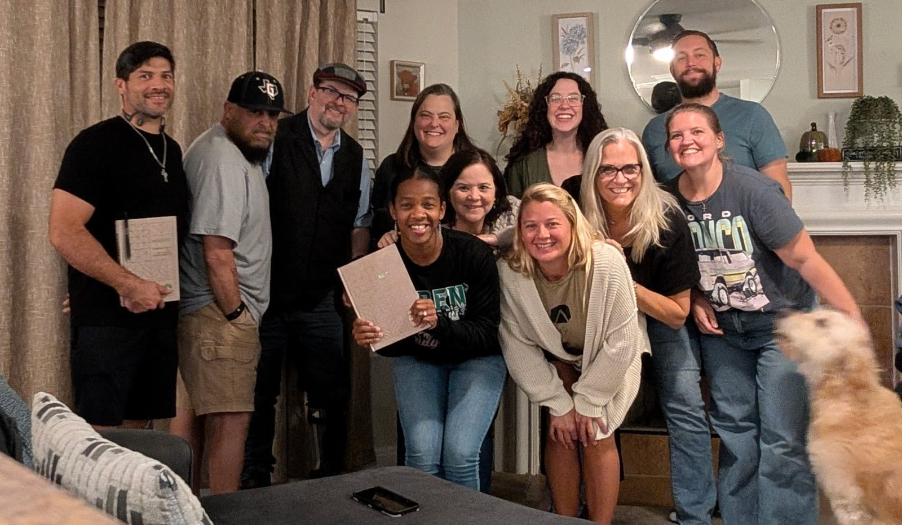
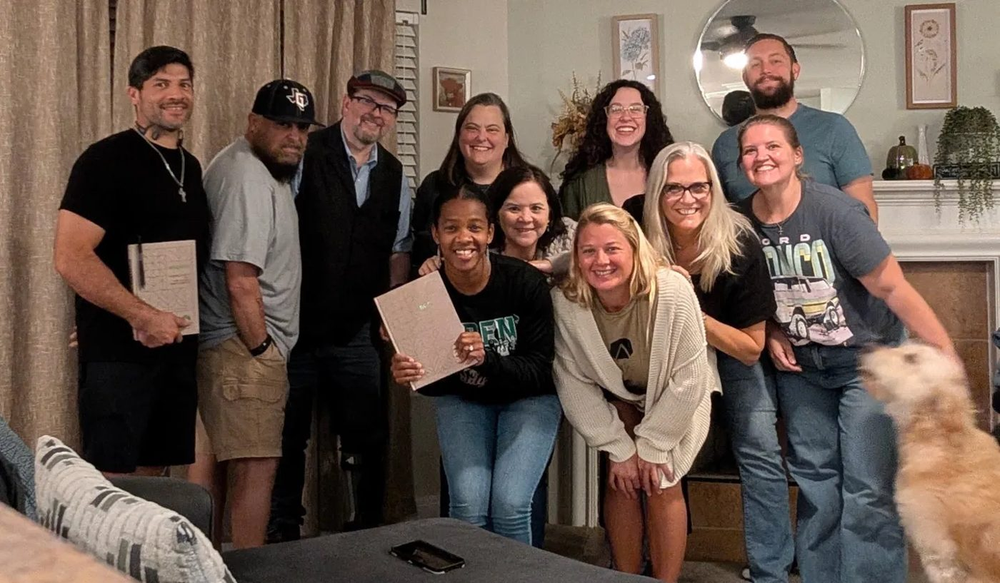

A 10-week experience
Rooted.
You’re not your best self by yourself. Rooted is 10 weeks with a group of people, built around seven rhythms of following Jesus.
Next session begins January 26.
weeks with the same group.
Built around seven rhythms of following Jesus
- Reading your Bible
- Prayer
- Confession and repentance
- Giving
- Serving
- Sharing your story
- Celebration
Along the way, your group serves together, prays together and practices sharing your stories.
How it works
Your best friends are just 10 weeks away.
- 1
Find friends.
Your group meets once a week for about an hour and a half to get real and talk about life.
- 2
Meet Jesus.
Whether this is your first time meeting Jesus or your first time in a long time, discover what he’s all about. And ask honest questions while you’re at it.
- 3
Break the cycle.
Maybe you feel stuck right now. It’s time to get unstuck.
- 4
Make a difference.
Along the way, there’s a prayer night, a serve night, and a huge party at the end.
I have questions.
Who is Rooted for?
Anyone ready for their next step with Jesus. Maybe you just started following him. Maybe you’ve followed him for years. Either way, Rooted is where groups start at Axiom.
Maybe you feel stuck right now. It’s time to get unstuck.
How will my Rooted group be chosen?
Our Rooted team will prayerfully place participants into groups of 10–12 people. We group by age, marital status and life stage. These groups ultimately depend on who registers.
A lot of prayer and thought goes into creating groups we think will give everyone the best experience. We’ll do our best to honor friend and leader requests when possible.
Can I sign up with my spouse or a friend?
Yes. Pick the two-person registration when you sign up. It’s $70 for both of you.
When does my group meet?
Once a week, Tuesday or Thursday evening, whichever works for you. You pick when you sign up. Each time is about an hour and a half.
Along the way there are two extra nights: a prayer night and a serve night.
What if I can’t make it every week?
We believe God uses Rooted in powerful ways, and that happens best when everyone in the group is there each week. So if you’ll miss more than two sessions, please wait and sign up for the next one. We want you and your group to have the best experience possible.
What does the cost cover?
Your Rooted workbook and the celebration party at the end.
What about my kids?
Axiom Kids isn’t available on Rooted nights. Talk to your group about it. Odds are they’re trying to figure out a plan too.
Something else? Email Keren, our Rooted Director, at keren@axiomchurch.com
